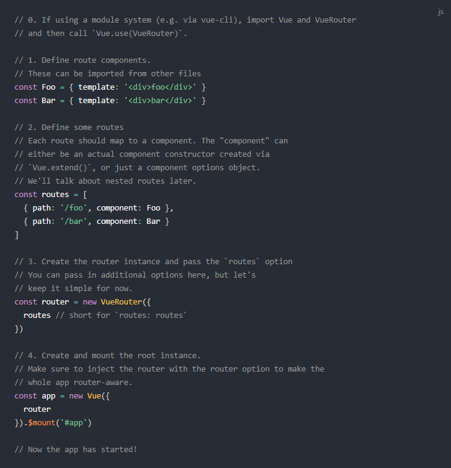

Unpkg.com pruža CDN veze zasnovane na npm. Gornja veza će uvek voditi do najnovijeg izdanja na npm. Takođe možete da koristite određenu verziju / oznaku putem URL-ova poput https://unpkg.com/vue-router@2.0.0/dist/vue-router.js. Uključite vue-router nakon Vue-a i on će se automatski instalirati:
<script src="/path/to/vue.js"> /script >
<script src="/path/to/vue-router.js"> /script>
Instalacija npm-a
<npm install vue-router>
Kada se koristi sa sistemom modula, ruter morate izričito instalirati putem Vue.use ():
<import Vue from 'vue'>
<import VueRouter from 'vue-router'>
<Vue.use(VueRouter)>
Napomena: Ne morate to da radite kada koristite globalne oznake skripti.
Ako imate projekat koji koristi Vue CLI, možete dodati Vue Router kao dodatak. Možete da dozvolite CLI-u da generiše gore navedeni kod, kao i dva uzorka rute. Takođe će prepisati vaš App.vue, pa obavezno napravite rezervnu kopiju datoteke pre pokretanja sledeće naredbe u vašem projektu:
vue add router
Instalacija Vue Cli-a
npm install -g @vue/cli
Kreiranje projekta
vue create my-project
Napomena: Vue Cli možemo dodati kao plugin ili ga instalirati kao što je prikazano u primeru iznad, ali nikada ne radimo oba.
Moraćete da klonirate direktno sa GitHub-a i sami napravite vue-router ako želite da koristite najnoviju verziju Dev build-a.
git clone https://github.com/vuejs/vue-router.git node_modules/vue-router
cd node_modules/vue-router
npm install
npm run build
Preporuka je da sami napravite Vue-router jer time obezbeđujete korišćenje najnovije verzije, a samim tim i veću efikasnost.
Stvaranje aplikacije na jednoj stranici pomoću Vue + Vue rutera deluje prirodno: sa Vue.js već komponujemo aplikaciju sa komponentama. Kada dodamo Vue Router u miks, sve što treba da uradimo je da mapiramo naše komponente na rute kako bi Vue Router znao gde da ih prikaže. Pogledajmo to na prostom primeru:
HTML
JavaScript
Ubrizgavanjem rutera dobijamo pristup preko objekta this.$router kao i trenutnu rutu preko this.$route objekta, unutar bilo koje komponente:
Kroz dokumente ćemo često koristiti instancu rutera. Imajte na umu da je this.$router potpuno isto kao i ruter. Razlog zašto koristimo this.$router je taj što ne želimo da uvozimo ruter u svaku pojedinu komponentu koja treba da manipuliše rutiranjem.
Ovaj primer možete pogledati i uživo.
Primetite da <router-link> automatski dobija klasu .router-link-active kada se podudari njegova ciljana ruta. O tome možete saznati više u referenci za API.